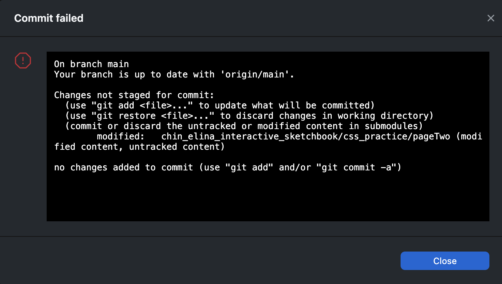

09/16/2026
Hi this is my first entry to my interactive sketchbook! today i have been working on the navigation and creating this file. I am having an issue with the git commit where it is not letting me commit it - and I dont know why ;-;

UPDATE!!
I figured out the issue! I accidentally initated git inside of page2, and it became its own repository. Therefore git was treating it as a submodule instead of a normal project file- so it was failing to commit.
solution
i fixed it by removing the hidden .git folder inside of page2 folder - and that removed its own repository. after that i reinitialized git properly and i could commit successfully. yay!
Planning site
I used figma to plan out my site